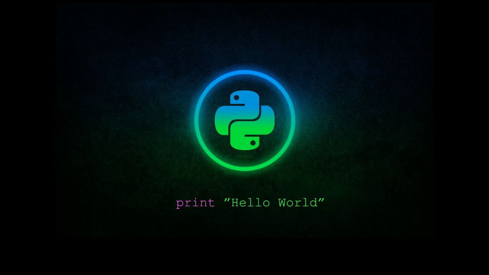

Your number one game site for downlaoding games for free!
Certainly! Grand Theft Auto V (GTA V) is an action-adventure game developed by Rockstar North and published by Rockstar Games. Here are the key details: Release Date: GTA V was initially released in 2013 for PlayStation 3 and Xbox 360. It later became available on PlayStation 4, Xbox One, and PC. The game has also been upgraded for PlayStation 5 and Xbox Series X|S, offering stunning visuals, faster loading times, and an action-packed Story Mode adventure12. Gameplay: Players can experience the game from either a third-person or first-person perspective. The main storyline involves completing missions with set objectives, but outside of missions, players have the freedom to explore the open world, engage in activities, and cause mayhem3.
Certainly! Metal Gear Rising: Revengeance is a hack and slash game developed by PlatinumGames and produced by Kojima Productions. It was released for the PlayStation 3, Xbox 360, and Microsoft Windows. Here are the key details: Setting: The game is a spin-off in the Metal Gear series, set four years after the events of Metal Gear Solid 4: Guns of the Patriots. It focuses on returning Metal Gear character Raiden as he confronts a private military company aiming to destabilize peaceful nations for profit12. Gameplay: In Metal Gear Rising, players control Raiden, who faces off against cyborg soldiers and Unmanned Gears (drone vehicles) in various environments. The game emphasizes clean cutting enemies and the environment apart3. Development: Originally announced as Metal Gear Solid: Rising, the game underwent significant changes during development. PlatinumGames took over development, revamping the entire game. Hideo Kojima remained the supervising director, and Kenji Saito directed the game1. Despite its camera mechanics and relatively short story mode, Metal Gear Rising: Revengeance received praise for its sophisticated cutting system, Metal Gear elements, soundtrack, and boss fights. It has become a staple in contemporary meme culture and remains popular online Learn more
Certainly! The Witcher 3: Wild Hunt is a 2015 action role-playing game developed and published by CD Projekt. It serves as the sequel to the 2011 game The Witcher 2: Assassins of Kings and is the third installment in The Witcher video game series. The game is played in an open world with a third-person perspective1. Here are some key details: Release Date: The Witcher 3: Wild Hunt was released on May 19, 2015, for PC, PlayStation 4, and Xbox One. A “Complete Edition” port arrived on Nintendo Switch on October 15, 20192. Massive Open World: The game features a vast open world that sets new standards in terms of size, depth, and complexity. Players can explore forgotten ruins, caves, shipwrecks, trade with merchants, and hunt across plains, mountains, and seas3. If you’re a fan of epic RPGs, intricate narratives, and immersive worlds, The Witcher 3: Wild Hunt is definitely worth checking out! 🗡️🌎🔥
Certainly! Watch Dogs 2 is an action-adventure game developed by Ubisoft Montreal and published by Ubisoft. It serves as the sequel to the original Watch Dogs released in 2014. Here are the key details: Plot: The game is set in the San Francisco Bay Area and follows the story of Marcus Holloway, a brilliant young hacker. Marcus teams up with Dedsec, a notorious group of hackers, to expose the hidden dangers of ctOS 2.0—an advanced operating system used by corrupt corporations to monitor and manipulate citizens on a massive scale12. Release Date: Watch Dogs 2 was released in November 2016 for PlayStation 4, Xbox One, and Windows. It later became available on Stadia in December 20203. Gameplay: Players take on the role of Marcus Holloway, navigating an open-world environment filled with hacking opportunities. The goal is to dismantle ctOS 2.0 and thwart criminal masterminds who exploit the
for more info try About us for starters.
Check out the author of the site APPIAH-KUSI_RICHARD!